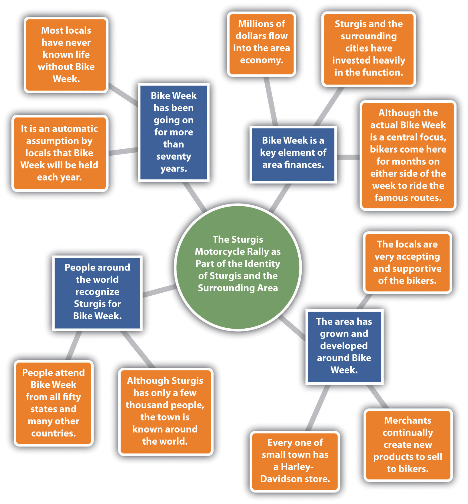

After you have settled on a topic, you are ready to explore general ideas that you will include when you start writing. You can generate these ideas with whatever brainstormingA technique for invention (generating ideas for writing); can be verbal or written, in collaboration or in isolation. method works best for you, such as browsing the Internet to do an interconnected search from topic to topic, talking or texting with others, creating related visuals, asking yourself questions, freewritingA method of idea generation usually involving a period of five to ten minutes of writing (or typing) without stopping, followed by another round of writing on a narrower passage of interest from the first round of freewriting. and mappingA method of using shapes filled with text to create visual ideas for a writing process and to show how the ideas are related; also called clustering and branching, or making a web.. In this section, we will explore these latter two options.
Freewriting requires finding a quiet place to write without distraction. Most versions involve starting with a word or phrase (usually your topic) and writing (or typing) about it without stopping for five minutes. It’s helpful to set a timer for each round of freewriting. After the first five-minute period, you examine your text for any phrases or words that look interesting to you. Circle them (or if you are typing, highlight, italicize, bold, or underline them). In the second round, you freewrite for another five uninterrupted minutes on your choice of the most interesting word or phrase from your first freewrite. Sometimes even a third round can help you narrow the topic further. For each round of freewriting, you should be unconcerned about your writing’s grammar or mechanics, how it would look to an outside audience, or even whether it would make sense to anyone but you. Freewriting is all about idea generation and exploration.
Mapping is a great visual means of gathering your ideas. Also called clustering and branchingA method of using shapes filled with text to create visual ideas for a writing process and to show how the ideas are related; also called clustering, mapping, or making a web. or making a webA method of using shapes filled with text to create visual ideas for a writing process and to show how the ideas are related; also called clustering and branching, or mapping., mapping lets you add as many ideas as you can think of and organize them as you go along. You have four general options for mapping.
No one option is superior to another. You should choose the option that works best for you. Using whichever option you choose, the point is to start with your main topic and then think of related subtopics and, for each subtopic, to think of supporting details resulting in a visual that shows the relationships between the key points of your writing plan. Since mapping is actually a visual brainstorming process, you do not have to generate your ideas in an orderly fashion. When you think of an idea, you can add it wherever it fits across the map.
In the concept-mapping software, you will be able to choose the level of the point you will add as well as the larger idea to which you want to attach each point. If you are creating your concept map structure yourself, make it clear to which level each addition belongs.
Study Figure 5.1 "Concept Map of Sturgis Motorcycle Rally" for clarification on how the process works. This map was made in Microsoft Word by creating circles, squares, and lines and placing them by hand into position. You can use all circles or all squares or whatever shape(s) you would like. This map uses a combination of squares and circles to make the subtopics stand out clearly from the details. This map also uses color to differentiate between levels.
Figure 5.1 Concept Map of Sturgis Motorcycle Rally
When the ideas stop flowing, put your map away and return to it later for another brainstorming session. Keep your freewrites and maps close at hand and feel free to add tidbits when they come to you. Get into the habit of keeping a writing pad and pen or pencil (or just your cell phone) next to your bed, so that you can jot down or text ideas as they come to you in the middle of the night. When you are comfortable that your map offers a good representation of the points you want to include in your paper, use it as a guide during the writing process.